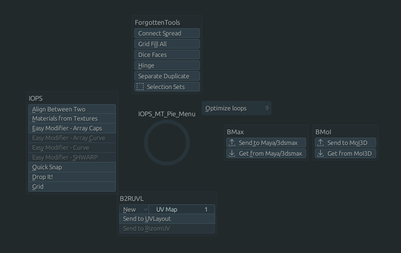
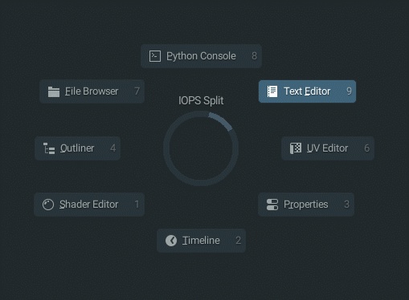

Pie Menus
InteractionOps features radial pie menus for efficient operator access and viewport management.
Main Pie Menu System
iOps Pie
The central pie menu providing quick access to core InteractionOps functionality.

Sections:
Core operators (F1-F5 equivalents)
Quick selection tools
Transform operations
Mode switching
Utility functions
iOps Split View Pie
Advanced viewport splitting and area management through an intuitive pie interface.

Split Options:
Horizontal/vertical splits
Custom split ratios
Area type selection
Layout presets
Multi-monitor support
Pie Menu Features
Navigation
Mouse Position: Determines selection
Center Return: Cancel operation
Quick Selection: Directional gestures
Visual Feedback: Highlight active sectors
Customization
Sector Assignment: Customize operator placement
Visual Styling: Colors and icons
Activation Methods: Hotkeys and gestures
Context Sensitivity: Different pies per mode
Usage Tips
Efficient Workflow:
Use quick gestures for common operations
Memorize pie directions for speed
Combine with modifier keys for variations
Create custom pie layouts for specialized tasks
Activation Methods:
Hotkey press and hold
Click and drag
Context-sensitive triggers
Custom gesture recognition